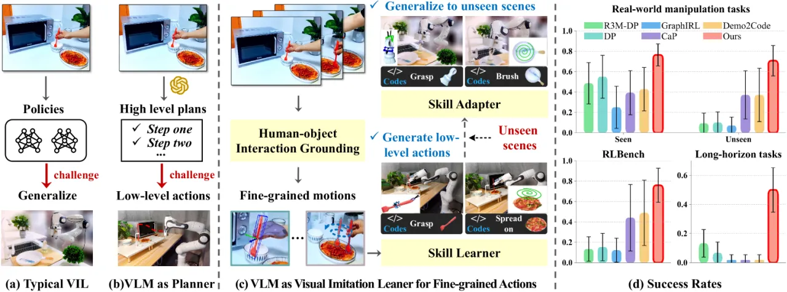
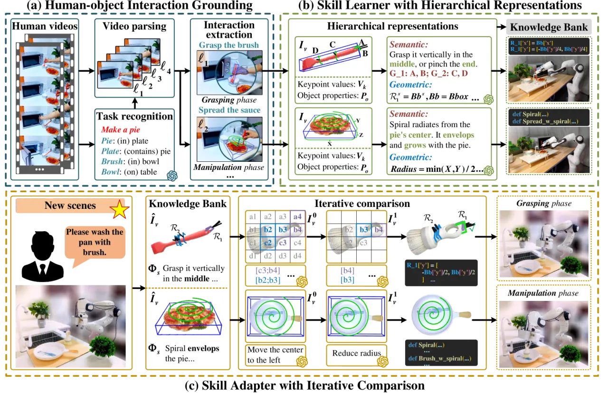
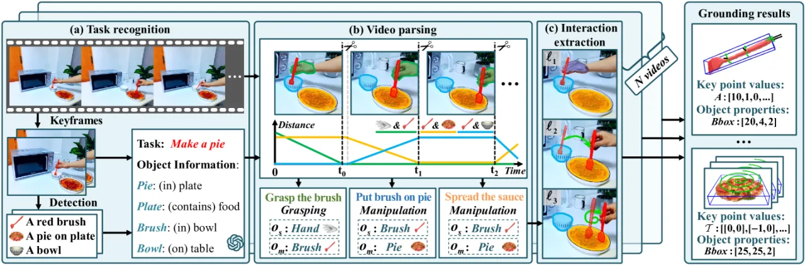

仅用 5 段人类视频，让 VLM 不再只当高层 planner，而是直接学出细粒度动作层级的 skill：先从视频里 ground 出 object-centric 运动，用分层约束表示（semantic + geometric constraints）把 skill 存进 knowledge bank，再靠迭代对比策略把 skill 迁移到未见环境。
Visual imitation learning (VIL) 是让机器人快速习得新技能的直观途径。近来的 VLM 在视觉-语言推理上很强，但现有 VIL 方法只是"天真地"把 VLM 当高层 planner——学出 high-level plan，底层执行仍依赖预先定义的 motion primitives，这正是主要瓶颈。
"Current VIL methods naively employ VLMs to learn high-level plans from human videos, relying on pre-defined motion primitives for executing physical interactions, which remains a major bottleneck."
作者归纳出三重障碍：(1) VLM 仍缺乏对细粒度动作的识别能力；(2) 运动信号本身冗余，难以直接理解；(3) 示范场景与目标场景存在差异，阻碍 skill 直接迁移。VLMimic 的目标：让 VLM 直接学到细粒度动作层级，且只需极少量人类视频。

VLMimic 是三段式流水线：Human-Object Interaction Grounding（把视频解析成段、抽取 object-centric 运动）→ Skill Learner（用分层约束表示从运动中学出 skill 并入库）→ Skill Adapter（在新场景用迭代对比策略更新 skill）。

四阶段把原始人类视频转为结构化的 object-centric 交互：借助 vision foundation model + VLM 做 task recognition（识别任务与相关物体）；用 SAM-Track + 点云分析做 video parsing（切分 segment）；做 subtask recognition（区分 grasping / manipulation 阶段）；再用 FrankMocap、ICP、BundleSDF、FoundationPose 抽取每段内的 object-centric interaction。

核心创新是用两级分层约束表示 skill，而非依赖固定运动基元：
两者以 key-value 形式存入 knowledge bank，同时服务于 high-level planning 与底层 skill 的复用。
面对未见环境时，先从 knowledge bank 检索 high-level plan，再通过迭代对比——在"已适配交互"与"检索到的交互"之间做 comparative analysis——细化约束；grasping 与 manipulation 约束分别有各自的适配逻辑，并用 VLM 的感知分析做 failure reasoning，从而高效适应新场景。
在 RLBench（仿真，12 个 manipulation 任务）、真实世界（14 个 manipulation + 6 个 long-horizon 任务）上评测，主结果均只用 5 段人类视频。Baseline：R3M-DP、Diffusion Policy (DP)、GraphIRL、Code as Policy (CaP)、Demo2Code。指标为 overall success rate（括号内为标准差）。
| Method | Success rate |
|---|---|
| R3M-DP | 0.13 (±0.12) |
| Diffusion Policy | 0.15 (±0.13) |
| GraphIRL | 0.12 (±0.12) |
| Code as Policy | 0.44 (±0.33) |
| Demo2Code | 0.49 (±0.32) |
| VLMimic | 0.76 (±0.17) |
较最佳 baseline Demo2Code（0.49）提升 over 27%。
| Method | Seen (SE) | Unseen (UE) |
|---|---|---|
| R3M-DP | 0.49 (±0.20) | 0.09 (±0.10) |
| Diffusion Policy | 0.55 (±0.21) | 0.10 (±0.10) |
| GraphIRL | 0.25 (±0.21) | 0.07 (±0.08) |
| Code as Policy | 0.39 (±0.22) | 0.37 (±0.24) |
| Demo2Code | 0.43 (±0.21) | 0.37 (±0.26) |
| VLMimic | 0.76 (±0.11) | 0.71 (±0.15) |
SE 超最佳 baseline 约 21%，UE 超 34%；在未见环境的鲁棒性尤为突出（多数 baseline 从 SE 到 UE 大幅崩塌）。
| Method | Success rate |
|---|---|
| R3M-DP | 0.13 (±0.09) |
| Diffusion Policy | 0.07 (±0.07) |
| GraphIRL | 0.02 (±0.04) |
| Code as Policy | 0.02 (±0.04) |
| Demo2Code | 0.02 (±0.04) |
| VLMimic | 0.50 (±0.15) |
长程任务上 baseline 几乎全线失败（≤0.13），VLMimic 达 0.50，超 baseline over 37%。
原文："Current VLMs are still limited by inference latency and computational resource requirements. We believe that the progression of lightweight VLMs will mitigate these limitations." 作者寄望于轻量化 VLM 的发展来缓解。
grounding 模块串联 SAM-Track、FrankMocap、ICP、BundleSDF、FoundationPose 等多个模型，任一环节的位姿/分割误差都可能沿流水线传播，影响 object-centric 交互抽取质量。
主结果基于 5 段人类视频、RLBench 12 + 真实世界 14 + 长程 6 个任务；更开放、更复杂的动态/双臂/接触密集场景下的表现尚待验证。